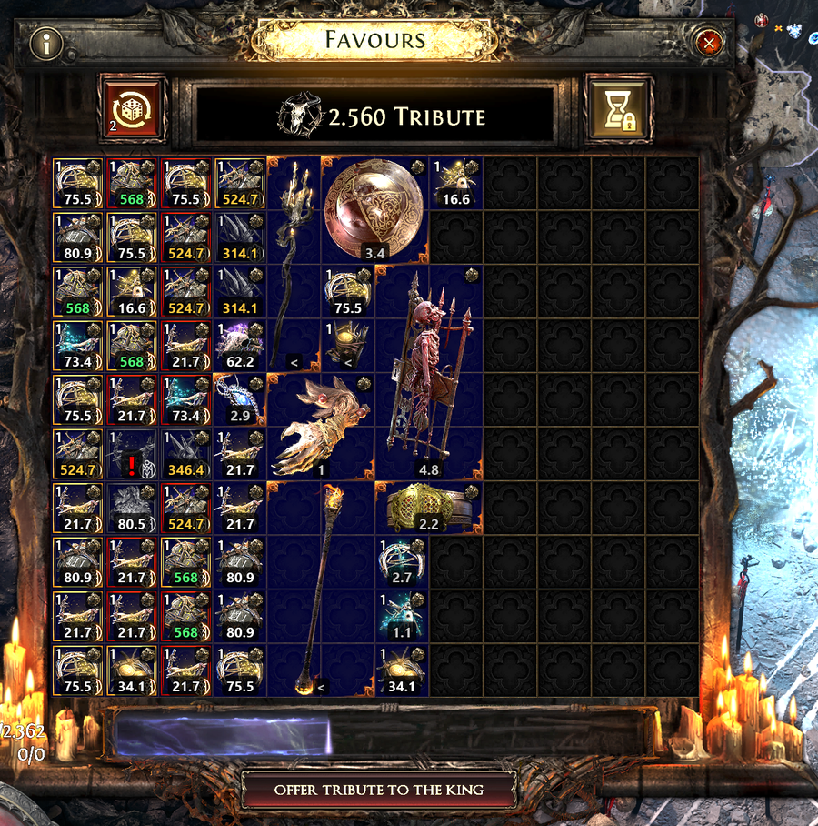
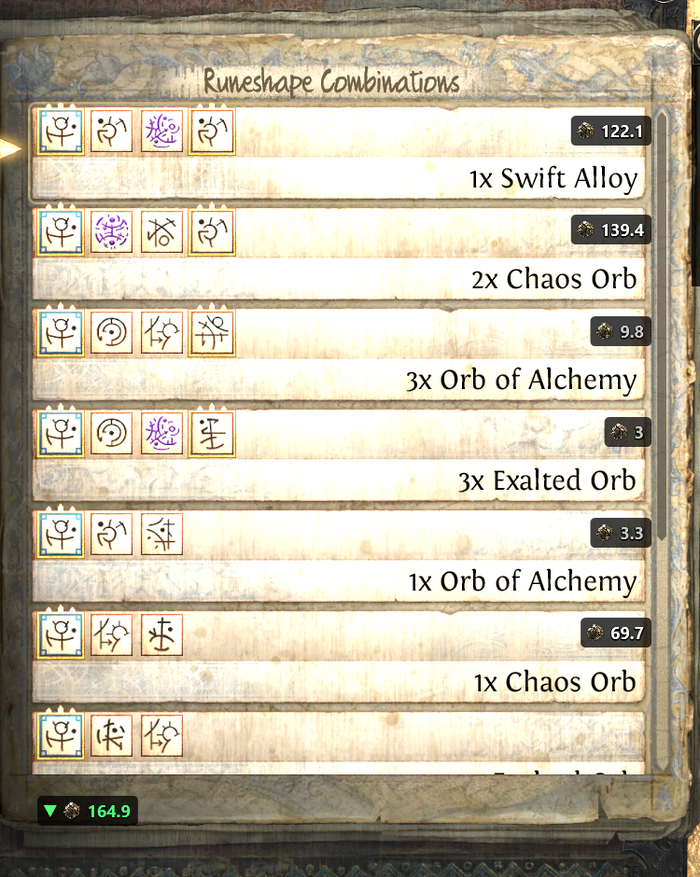
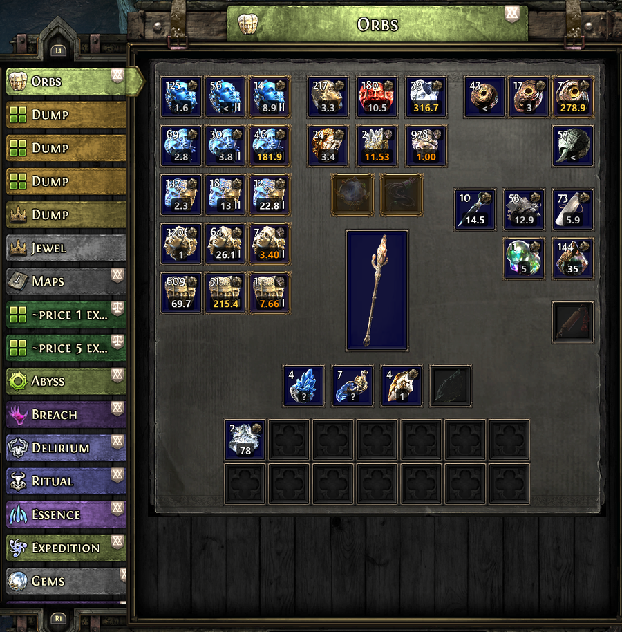
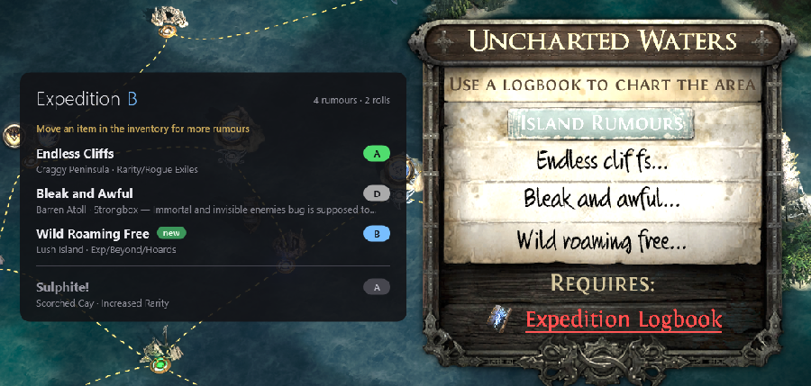

Market prices from poe.ninja · Favours · Remnants · Island Rumours · Stash tabs
Marktpreise von poe.ninja · Gaben · Relikte · Inselgerüchte · Truhen-Tabs
poe2pricer reads the Path of Exile 2 window from the screen and writes prices from poe.ninja next to what it recognises: the Ritual window (Favours), the Expedition remnant list (Runeshape Combinations), the special stash tabs and the Island Rumours panel of the Atlas. No key is pressed, nothing is clicked, and nothing about you or your game is sent anywhere: the program only reads the screen and draws over the game. What it requests: prices from poe.ninja and the item images they refer to from web.poecdn.com, the rumour ratings from Gnejs PoE Tools and a public Google sheet, and once per start the newest release from github.com (can be switched off).
poe2pricer liest das Fenster von Path of Exile 2 vom Bildschirm und schreibt Preise von poe.ninja neben das, was es erkennt: das Ritual-Fenster (Gaben), die Relikt-Liste der Expedition (Runenformen-Kombinationen), die besonderen Truhen-Tabs und das Inselgerüchte-Fenster des Atlas. Keine Taste wird gedrückt, nichts geklickt, und nichts über dich oder dein Spiel wird irgendwohin gesendet: das Programm liest nur den Bildschirm und zeichnet über das Spiel. Was es abruft: Preise von poe.ninja und die zugehörigen Gegenstandsbilder von web.poecdn.com, die Gerüchte-Wertungen von Gnejs PoE Tools und einem öffentlichen Google-Sheet, und einmal je Start die neueste Veröffentlichung von github.com (abschaltbar).
poe2pricer-app-win-Setup.exe (installs for your user account, updates itself),
or unpack the zip anywhere and start poe2pricer.exe. The installed folder holds the
program in current, which every update replaces, and a starter
poe2pricer.exe beside it that always starts the current version.poe2pricer-app-win-Setup.exe ausführen (installiert für dein Benutzerkonto, aktualisiert
sich selbst), oder das Zip irgendwohin entpacken und poe2pricer.exe starten. Im
installierten Ordner liegt das Programm in current, das jedes Update ersetzt, und daneben ein
Starter poe2pricer.exe, der immer die aktuelle Fassung startet.In the settings window, League is set to "Auto (current league)": the newest league poe.ninja lists. Pick another one if you play elsewhere, for example Standard or a hardcore league. In Standard poe.ninja lists no prices for most uniques; they show "?".
Im Einstellungsfenster steht Liga auf „Auto (aktuelle Liga)“: die neueste Liga, die poe.ninja führt. Wähle eine andere, wenn du woanders spielst, etwa Standard oder eine Hardcore-Liga. In Standard führt poe.ninja für die meisten Uniques keine Preise; dort steht „?“.
Prices are in Exalted Orbs (white numbers); large values are shown in Divine Orbs, orange with the Divine icon. The most valuable item of a window is marked in green. Prices are refreshed every few minutes; Refresh prices in the settings window fetches them at once.
Preise sind in Exalted Orbs (weiße Zahlen); große Werte stehen in Divine Orbs, orange mit Divine-Symbol. Der wertvollste Gegenstand eines Fensters ist grün markiert. Preise werden alle paar Minuten aktualisiert; Preisupdate im Einstellungsfenster holt sie sofort.
| Mark | Meaning |
|---|---|
? | Recognised, but poe.ninja lists no price for it. |
< | Below your price floor. |
! (red) | A greyed-out omen whose kind cannot be told from its symbol alone. Put the mouse or the controller cursor on it: the program reads its tooltip, and the price follows. |
▲ ▼ | In the remnant list: the best reward is scrolled out of view in that direction. |
| Zeichen | Bedeutung |
|---|---|
? | Erkannt, aber poe.ninja führt keinen Preis dafür. |
< | Unter deiner Preisschwelle. |
! (rot) | Ein ausgegrautes Omen, dessen Art sich am Symbol allein nicht erkennen lässt. Maus oder Controller-Cursor darauf: das Programm liest den Tooltip, und der Preis folgt. |
▲ ▼ | In der Relikt-Liste: die beste Belohnung liegt in dieser Richtung außerhalb des Sichtbereichs. |
Every item in the grid gets its price; the most valuable one is marked. Items under a tooltip or a notification are left alone until it is gone. Prices below your price floor show a grey "<" instead of a number.
Jeder Gegenstand im Raster bekommt seinen Preis; der wertvollste ist markiert. Gegenstände unter einem Tooltip oder einer Meldung bleiben frei, bis sie weg ist. Preise unter deiner Schwelle zeigen ein graues „<“ statt einer Zahl.

Every reward row gets the price of the whole row: "3x Exalted Orb" is priced as three. When the best reward is scrolled out of view, an arrow at the edge of the list points to it. Skill rows ("Skill Level 20: …") have no market and get no price. Rows below the price floor show nothing.
Jede Belohnungszeile bekommt den Preis der ganzen Zeile: „3x Exalted Orb“ zählt dreifach. Ist die beste Belohnung aus dem Sichtbereich gescrollt, zeigt ein Pfeil am Rand der Liste dorthin. Skill-Zeilen („Skill Level 20: …“) haben keinen Markt und bekommen keinen Preis. Zeilen unter der Schwelle zeigen nichts.

Orbs, essences, breach, delirium, expedition, ritual, abyss, tablets and socketables: every filled slot gets the price per item. A slot below the price floor shows a grey "<".
Orbs, Essenzen, Breach, Delirium, Expedition, Ritual, Abyss, Tablets und Sockelbares: jedes belegte Feld bekommt den Preis je Stück. Ein Feld unter der Schwelle zeigt ein graues „<“.

On the Atlas, the Island Rumours panel of an uncharted island lists the rumours of the island. poe2pricer shows a table beside the panel as soon as it has come to rest: for each rumour its island, its mods, the community tier (S+ to F) and a note. The ratings and notes come from Gnejs PoE Tools (tiers and notes by Jestra1220) and are loaded at run time; the settings window shows the source and when it was updated.
Im Atlas listet das Inselgerüchte-Fenster einer unerforschten Insel ihre Gerüchte. poe2pricer zeigt neben dem Fenster eine Tabelle, sobald es zur Ruhe gekommen ist: je Gerücht die Insel, die Mods, die Community-Wertung (S+ bis F) und eine Notiz. Wertungen und Notizen kommen von Gnejs PoE Tools (Wertungen und Notizen von Jestra1220) und werden zur Laufzeit geladen; das Einstellungsfenster zeigt Quelle und Stand.

The panel shows three rumours at a time; moving an item in the inventory rolls them anew, and the panel closes and opens again. poe2pricer recognises the island by the sea chart around its ship marker and collects the rumours over the rolls (opening the panel again without moving anything shows the same three and counts as no roll): under the table stands the expedition tier of the island with the number of rumours seen and of rolls, below it the rumours seen before that the panel does not show now, and a rumour shown for the first time at this island is marked new. The expedition tier is the mean of the tiers of all rumours seen there (your own tiers first), given as the highest tier that mean reaches. Fewer than three rumours on the panel means the island has no more: complete; with three, the card reminds you to move an item for more. The collection lasts while the program runs; an island worth remembering is bookmarked in the game. A limit: dragging or zooming the Atlas between two openings, or switching between keyboard and controller, can leave too little of the chart in common — the Atlas is drawn in perspective, a moved map shows the same island distorted differently — and the program starts a new collection for the same island; opening the panel without moving the Atlas is always recognised.
Das Fenster zeigt drei Gerüchte auf einmal; wer einen Gegenstand im Inventar verschiebt, würfelt sie neu, das Fenster schließt und öffnet sich wieder. poe2pricer erkennt die Insel an der Seekarte um ihr Schiffssymbol und sammelt die Gerüchte über die Würfe hinweg (wer das Fenster nur schließt und wieder öffnet, ohne etwas zu verschieben, sieht dieselben drei; das zählt nicht als Wurf): unter der Tabelle steht das Expeditionstier der Insel mit der Zahl der gesehenen Gerüchte und der Würfe, darunter die früher gesehenen Gerüchte, die das Fenster gerade nicht zeigt, und ein Gerücht, das auf dieser Insel zum ersten Mal erscheint, ist mit neu markiert. Das Expeditionstier ist das Mittel der Wertungen aller dort gesehenen Gerüchte (eigene Wertungen zuerst), angegeben als höchste Stufe, die dieses Mittel erreicht. Weniger als drei Gerüchte im Fenster heißt, die Insel hat nicht mehr: vollständig; bei dreien erinnert die Karte daran, für mehr einen Gegenstand zu verschieben. Die Sammlung gilt, solange das Programm läuft; eine Insel, die man sich merken will, bookmarkt man im Spiel. Eine Grenze: Wer den Atlas zwischen zwei Öffnungen verschiebt oder zoomt oder zwischen Tastatur und Controller wechselt, lässt der Karte womöglich zu wenig Gemeinsames — der Atlas ist perspektivisch gezeichnet, eine verschobene Karte zeigt dieselbe Insel anders verzerrt —, und das Programm beginnt für dieselbe Insel eine neue Sammlung; Öffnen ohne Bewegen des Atlas wird immer erkannt.
The Rumours tab of the settings window lists the community table. There you can give a rumour your own tier and a note; your own tier overrides the community tier and is marked with * in the game. Rumours the table does not know can be added with "+ Add custom row". Below the table stand the weights of the tiers for the expedition tier (S+ 6 … F 1 to begin with). Everything is applied on Save.
Der Tab Gerüchte des Einstellungsfensters zeigt die Community-Tabelle. Dort kannst du einem Gerücht eine eigene Wertung und eine Notiz geben; die eigene Wertung geht der Community-Wertung vor und ist im Spiel mit * markiert. Gerüchte, die die Tabelle nicht kennt, lassen sich mit „+ Eigene Zeile hinzufügen“ anlegen. Unter der Tabelle stehen die Gewichte der Stufen für das Expeditionstier (anfangs S+ 6 … F 1). Alles gilt nach Speichern.
| Setting | What it does |
|---|---|
| League | Which league's prices are shown. "Auto" follows the current league. |
| Hide prices below | The price floor, in Exalted, Chaos or Divine Orbs. Applies to Favours, remnant rewards (value of the whole row) and stash tabs (price per item). Does not affect the mark on the best item. |
| Prices in | The unit prices are written in below one Divine Orb: Exalted (standard) or Chaos, for late in a league when exalts are cheap. From one Divine on prices are always in Divine. |
| Hotkeys | Click a field, then press the key or combination. The keys work only while the game is in the foreground. |
| Extended diagnostics | Off by default. On, the program also keeps pictures of moments it decided on its own (today: a reroll it detected in the Ritual window, and a first reading of the Ritual window that a later one corrected), a few of each kind, in the diagnostics folder — for a bug report. Off, only the diagnostics key writes there. Nothing is sent anywhere either way. |
| Auto-scan | Which windows show prices by themselves while they are open: Ritual, Expedition (rumours and remnants), stash. The hotkey always shows all of them. |
| Scan intervals | How often the program looks at the screen while no window is shown and while one is. If the game stutters, raise both. |
| Start with Windows | Starts poe2pricer in the tray when you sign in. Applied or removed on save. |
| Check for updates | Asks github.com once at every start whether a newer version is out. Installed with the setup: it is downloaded in the background and installed when you quit, or at once when you click the message. Unpacked from a zip: the message leads to the download page. |
| Game settings file | The game's options file (poe2_production_Config.ini). The program reads the Popup Size and the game language from it; normally it finds the file by itself. |
| Program language | English or German for the settings window and the messages. |
| Einstellung | Wirkung |
|---|---|
| Liga | Welche Liga die Preise liefert. „Auto“ folgt der aktuellen Liga. |
| Preise ausblenden unter | Die Schwelle, in Exalted, Chaos oder Divine Orbs. Gilt für Gaben, Relikt-Belohnungen (Wert der ganzen Zeile) und Truhen-Tabs (Preis je Stück). Die Markierung des besten Gegenstands bleibt. |
| Preise in | Die Einheit, in der Preise unter einem Divine Orb stehen: Exalted (Standard) oder Chaos, für das Ligaende, wenn Exalted billig sind. Ab einem Divine immer in Divine. |
| Tastenkürzel | Feld anklicken, dann Taste oder Kombination drücken. Die Tasten wirken nur, während das Spiel im Vordergrund ist. |
| Erweiterte Diagnose | Aus als Vorgabe. Eingeschaltet hebt das Programm zusätzlich Bilder von Momenten auf, in denen es selbst entschieden hat (heute: ein erkannter Wurf im Ritual-Fenster, und eine erste Lesung des Ritual-Fensters, die eine spätere berichtigt hat), wenige je Art, im Diagnoseordner — für eine Fehlermeldung. Aus: nur die Diagnose-Taste schreibt dort. Gesendet wird so oder so nichts. |
| Auto-Scan | Welche Fenster von selbst Preise zeigen, solange sie offen sind: Ritual, Expedition (Gerüchte und Relikte), Truhe. Die Taste zeigt immer alle. |
| Scan-Intervalle | Wie oft das Programm auf den Bildschirm sieht, während kein Fenster gezeigt wird und während eines gezeigt wird. Ruckelt das Spiel, beide erhöhen. |
| Mit Windows starten | Startet poe2pricer beim Anmelden im Tray. Wird beim Speichern gesetzt oder entfernt. |
| Nach Updates suchen | Fragt bei jedem Start einmal bei github.com an, ob eine neuere Version da ist. Mit dem Setup installiert: sie wird im Hintergrund geladen und beim Beenden installiert, oder sofort per Klick auf die Meldung. Aus dem Zip entpackt: die Meldung führt zur Download-Seite. |
| Datei der Spieleinstellungen | Die Optionsdatei des Spiels (poe2_production_Config.ini). Das Programm liest daraus Popup Size und Spielsprache; normalerweise findet es die Datei selbst. |
| Sprache des Programms | Englisch oder Deutsch für Einstellungsfenster und Meldungen. |
Closing the window minimises it to the tray; Exit quits the program. Settings
are kept in %LOCALAPPDATA%\poe2pricer.
Schließen des Fensters minimiert es in den Tray; Beenden beendet das Programm.
Einstellungen liegen in %LOCALAPPDATA%\poe2pricer.
| Key | Action |
|---|---|
| Alt+F | Show or hide the prices for the window that is open in the game. |
| Alt+Shift+F | Save a diagnosis (a screenshot and what the program made of it) to %LOCALAPPDATA%\poe2pricer\diagnostics. |
| Taste | Wirkung |
|---|---|
| Alt+F | Preise für das offene Spielfenster zeigen oder verstecken. |
| Alt+Shift+F | Eine Diagnose (Screenshot und was das Programm daraus gemacht hat) nach %LOCALAPPDATA%\poe2pricer\diagnostics speichern. |
Both keys can be changed in the settings window. They work only while the game is in the foreground.
Beide Tasten lassen sich im Einstellungsfenster ändern. Sie wirken nur, während das Spiel im Vordergrund ist.
%LOCALAPPDATA%\poe2pricer\log.txt
says what the program saw; lines starting with "hidden:" name the reason.poe2pricer.exe again, which brings the
running one's window to the front.dism.exe, no scripts.%LOCALAPPDATA%\poe2pricer\log.txt sagt, was das Programm gesehen hat; Zeilen mit
„hidden:“ nennen den Grund.poe2pricer.exe erneut starten, das holt das Fenster des
laufenden Programms nach vorn.dism.exe, ohne Skripte.Press Alt+Shift+F while the wrong price is on screen, then
open an issue at github.com/saxe78/poe2pricer/issues
with the files from %LOCALAPPDATA%\poe2pricer\diagnostics and the relevant lines
of log.txt. The diagnosis picture shows your game as it was at that moment.
Alt+Shift+F drücken, solange der falsche Preis zu sehen ist,
dann ein Issue unter github.com/saxe78/poe2pricer/issues
anlegen, mit den Dateien aus %LOCALAPPDATA%\poe2pricer\diagnostics und den passenden
Zeilen aus log.txt. Das Diagnosebild zeigt dein Spiel, wie es in dem Moment war.
poe2pricer is not affiliated with Grinding Gear Games or poe.ninja.
poe2pricer steht in keiner Verbindung zu Grinding Gear Games oder poe.ninja.